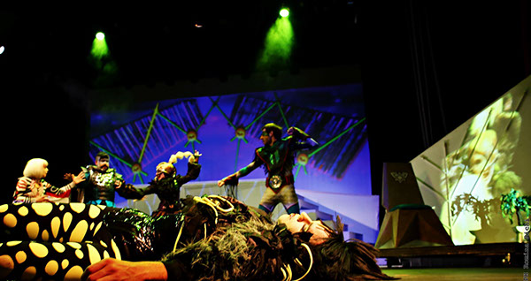

El proyecto que se presenta a continuación, encuentra su lugar en el campo de la imagen audiovisual, ligada a los medios digitales y las posibilidades de creación a las que estos se aventuran. La relación existente entre el arte, el diseño y la tecnología no sólo crean nuevas formas de expresión y comunicación, sino que también sienta las bases para las nuevas tendencias que influirán en la creación artística. Dentro de esta objetividad, el teatro y la representación escenográfica, no han quedado exentos de este panorama, inclinándose por la incorporación de las tecnologías de los nuevos medios, llevando a la escenografía a convertirse en un espacio sin fronteras, de libre experimentación donde cohabitan la ideología del autor, la del actor y la del espectador. Bajo esta relación, se erige el concepto de escenografía digital, como una técnica que integra el espacio de representación convencional con las herramientas provenientes de los nuevos medios. Si bien es una práctica vigente, su aplicación es un deseo de los creadores de antaño, quienes evidenciaban el potencial de la luz y la imagen proyectada, como recurso basal de la escenografía.
 Vjin en teatroLa creación de una escenografía digital para una obra de teatro, involucra la conjunción de múltiples variables, la mayoría provenientes de las vanguardias cinematográficas del siglo XX, el lenguaje audiovisual y los códigos estéticos de movimientos artísticos. Estos elementos de composición, al ponerse en interacción con los objetivos comunicacionales del guion dramático, sustentan la gestación formal y física del contenido de la obra. Dentro de estos principios teóricos, se desarrolla el proyecto mismo, correspondiente a la creación de escenografía digital para una versión contemporánea de la obra de teatro “El Mago de Oz, el musical”, para ser aplicada el VJing, una técnica de representación audiovisual a tiempo real. Para llevar a cabo este proyecto, se realizó una planificación que permitiera en primera instancia, organizar la búsqueda de información teórica sobre el tema, recurriendo a bibliografía formal y revisión de material web. Posteriormente, comenzó el proceso de interpretación del guion dramático en conjunto a la intención comunicacional pretendida por la compañía y productora oficial de la obra. Una vez presentadas las propuestas gráficas, de animación y estética, se pudo concretar la creación del material audiovisual, su consecutiva animación, entrega y presentación. El resultado, es la presentación de la obra musical en marco de una gira que recorre el país, llevando la fantasía de Oz a miles de personas, que serán espectadores de una pieza artística única e inolvidable.
Arriaza Quezada, K. (2012). Luces y fantasía en la tierra feliz de Oz: escenografía digital para una versión contemporánea de la obra de teatro El Mago de Oz, el musical, para ser aplicada con la técnica del vjing. En línea.